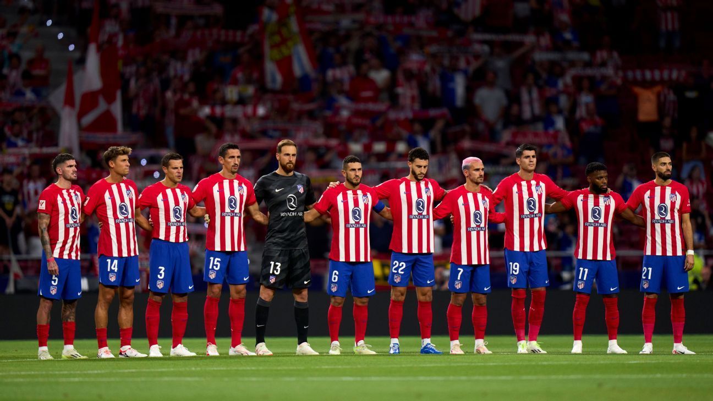

Athletico de Madrid

Retour
Au contraire de ses rivaux, le Real et le Barça, l'Atlético n'est jamais monté sur le toit de l'Europe. Focus sur l'histoire des Colchoneros en Ligue des Champions.
Champion d’Espagne à onze reprises, le club s’est également démarqué sur la scène européenne. Toutefois, en Ligue des champions, l’Atlético de Madrid n’a fait que toucher du bout du doigt son rêve de victoire. Retour sur son parcours semé d'embûches dans la C1.
Quel est le bilan de l'Atlético de Madrid en Ligue des champions ?
Parvenant à atteindre trois finales au cours des dernières décennies, sans jamais atteindre le Graal, l'Atlético de Madrid a tracé son chemin dans l'arène prestigieuse de la Ligue des champions, non sans difficultés. Depuis ses débuts dans la compétition en 1958 (Coupe des clubs champions), le club madrilène compte :
167 matchs
80 victoires
44 nuls
43 défaites
Sur ses dix-neuf participations à la Ligue des champions (3 finales, 3 demi-finales, 5 quarts de finale), l’Atlético de Madrid affiche un taux de victoire égal à 47.90%. Parmi ses rencontres marquantes, on trouve :
Vs Bayern Munich : 8 confrontations (2 victoires - 2 nuls - 4 défaites)
Vs Real Madrid : 9 confrontations (2 victoires - 2 nuls - 5 défaites)
Vs FC Porto : 10 confrontations (4 victoires - 3 nuls - 3 défaites)
Vs FC Barcelone : 4 confrontations (2 victoires - 1 nul - 1 défaite)
Quels sont les bons et les moins bons matches de l'Atlético de Madrid en Ligue des champions ?
L’un des sommets de son parcours fut lors de la saison 2013-2014, où les Colchoneros, sous la houlette de leur entraîneur Diego Simeone, ont atteint la finale face au Real Madrid. Dans un affrontement historique entre les rivaux de la capitale espagnole, l'Atlético a dominé la majeure partie du match, ne cédant qu'à la toute dernière minute du temps additionnel, avant de s'effondrer totalement lors des prolongations (4-1 a.p.). Malgré une défaite amère, cette performance a incarné la ténacité et l'esprit combatif qui caractérisent le jeu de l'Atlético.
Avide de revanche, l'Atlético de Madrid retrouvait, deux ans plus tard en finale (2015-2016), son rival au stade Giuseppe-Meazza de Milan. À la suite d’un match nul (1-1), le Real Madrid de Zinedine Zidane l’emportait dans l'épreuve des tirs au but (5-3). Ce deuxième Derby madrilène de l’histoire de la Ligue des champions marquait ainsi la troisième défaite en finale de l'Atlético dans la compétition. La première était survenue quarante ans plus tôt. En finale contre le Bayern Munich, lors de l’édition 1973-1974, l'Atlético avait également été battu (4-1 après prolongations), au terme d’un match marqué par la tension et la controverse.
Qui sont les meilleurs buteurs de l’Atlético de Madrid en Ligue des champions ?
Qualifié en huitièmes de finale en cette saison 2023-2024, l’Atlético de Madrid et ses attaquants ont su tirer leur épingle du jeu dans cette édition. En tête de file : Álvaro Morata (5 buts) et Antoine Griezmann (5 buts) figurent parmi les meilleurs buteurs de cette C1.
Dans l'histoire de la plus prestigieuse compétition de football européenne, certains joueurs ont gravé leurs noms dans les annales du club. Parmi les meilleurs buteurs de l'Atlético de Madrid en Ligue des champions figure en tête de liste l'attaquant français Antoine Griezmann, avec 31 buts à son actif. Pilier crucial de l’équipe depuis son arrivée en 2014, “Grizi” a brillé à maintes reprises pour ses prouesses techniques et son instinct aiguisé devant le but.
À ses côtés, d’autres légendes du club telles que Luis Aragonés, Saúl Ñíguez, Diego Costa, ou encore Vavá, ont également laissé leur empreinte, en inscrivant des buts importants en Ligue des champions.
Voici le top 10 des meilleurs buteurs de l’Atlético de Madrid en Ligue des champions :
Antoine Griezmann : 31 buts
Luis Aragonés : 12 buts
Saúl Ñíguez : 11 buts
Diego Costa : 9 buts
Vavá : 8 buts
Álvaro Morata : 8 buts
João Félix : 7 buts
Raúl García : 7 buts
Joaquín Peiró: 6 buts
Enrique Collar : 6 buts